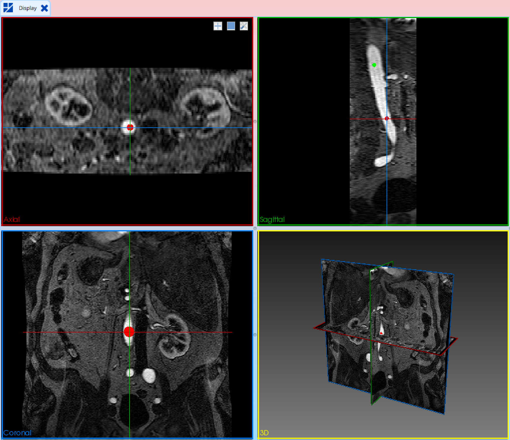
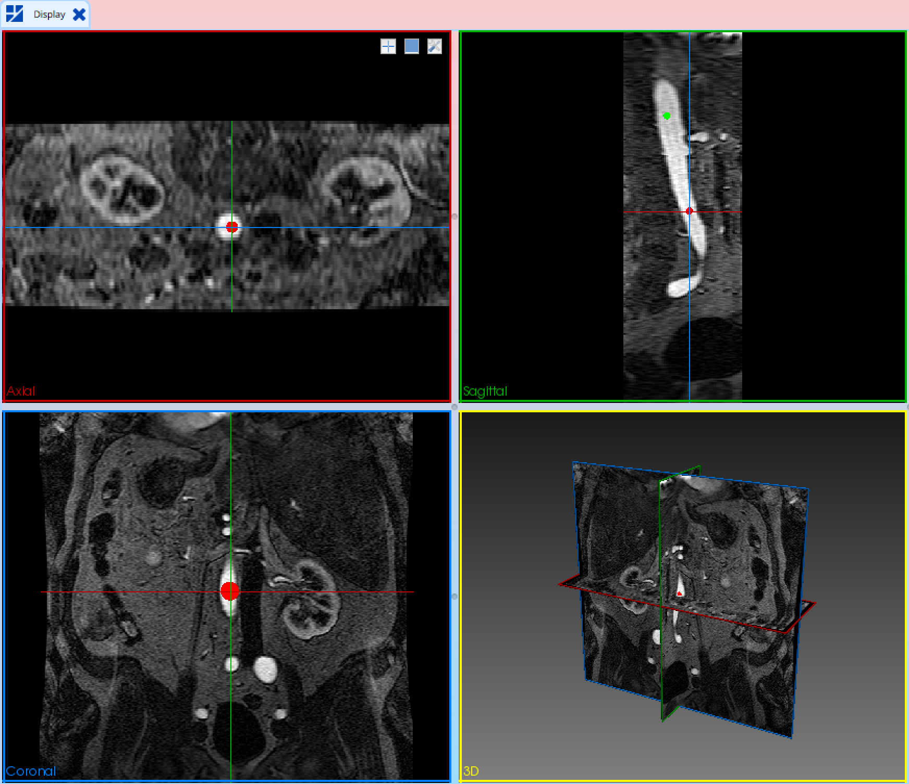

Creating Geometric Models from Medical Imaging Data
Our eye is able to distinguish different objects within an image, but to the computer, the image is just a group of numbers to be displayed in a grid format. It is not able to distinguish what parts of the image correspond to a specific object.
One way to describe an object within a computing environment is with geometric solid models. SimVascular is one system that allows users to generate geometric models from medical imaging data. The first step is to segment the medical imaging data and identify what parts of the image describe the object of interest. While 3D segmentation methods are being developed, this document only details using SimVascular with the 2D segmentation method. The information from the segmentations is then transformed into a solid model.
The figure that follows describes the process in more detail. For the segmentation step, paths along the vessels of interest need to be specified first (See Path Planning). 2D segmentations are then generated along each of the paths (See Segmentation) These segmentations can then be lofted together to create a solid model. A separate solid model is created for each vessel, and these are all unioned together to create the final model. The last step is to blend the vessel junctions so that they are smoother (see Solid Modeling (PolyData) and Solid Modeling (Analytic)).

Path Planning
Section: Creating a path shows you how to generate a path. Section: Smoothing a path shows you how to smooth a path. Lastly, Section Importing and Export Legacy Paths, will explain how to save your work, and then load it again after restarting SimVascular.
Some tips to keep in mind as you are constructing paths.
The paths you create determine where you will be able to perform segmentations. Make sure your paths cover the entire distance of the vessel that you’re interested in modeling. In general, it is a good idea to make your paths as long as possible. It is much easier to make a path a little longer in both directions than to try to “add on” to a path later.
The paths are also important in determining how individual vessels can be joined together. It’s generally helpful if there is some overlap in the paths. This will ensure that the inlet of the branch vessel will fit entirely inside of the main vessel.
Lastly, it’s easier if the paths pass near the center of the vessel lumens. This makes it easier for the segmentation part of the process.

Creating a Path
The goal of this exercise is to create a path for the abdominal aorta and the left common and external iliac. As you will see, you need to create a path (centerline) for each vessel of interest. In SimVascular, a path contains two ordered sets of points. One set is “Control Points”; the other set is “Path Points” which define a vessel and are calculated using a spline based on the control points.

To create a path (empty):
Right click the data node "Paths" in the SV project in Data Manager
Click "Create Path" in the popup menu
Path Name: aorta
Subdivision Type: "Spacing Based"
Click "OK"

There are three options for Subdivision Type. Each option uses a different way to calculate the number (n) of path points between two adjacent control points. Assume the total number of control points is Nc.
Total Number (Np): appoximate total number of path points. n=[(Np-1)/(Nc-1)]-1; the actual total number of path points Npa=(n+1)*(Nc-1)+1
Subdivision Number (Ns): n=Ns-1; Npa=(n+1)*(Nc-1)+1
Spacing Based: Assume s is the spacing; l is the distance between two adjacent control points. n= [l/s]-1; Npa=(n+1)*(Nc-1)+1
Now a new data node “aorta” for the path is created under the data node “Paths” in Data Manager. Double click the data node “aorta" and the tool “SV Path Planning” automatically shows up. The new path is empty and has no control or path points so far.
To add a control point:
Adding Mode: Smart
Move the cursor to Axial view in Display
Move the slice to position 475: by scrolling center mouse button or moving Axial slider (in Image Navigator) to 475
Right press and move to zoom in to enlarge the vessel cross section
Method 1: Click at the center of the vessel; Ctrl+A or click the button "Add Smart"
Method 2(interactive): Move the cursor to the center of the vessel; Ctrl + Left Click
A control point is added for the path and should appear under the Control Point List. In Display, the point is shown as a blue or red point, depending on if the point is selected.
To move a control point (interactively):
Move the cursor to the control point; it becomes red(selected) if not selected yet
Left press on the point and move
HELPFUL HINT: Use the three 2D views at the same time to check if the control point is really located at the center of the vessel.
HELPFUL HINT: The control points may look too large or small in 2D/3D-view windows. You can change the size, to do it:
Select all the paths you want to change in Data Manager
Right Click and click "Point 2D Size" or "Point 3D Size"
Give new size in the popup dialog

HELPFUL HINT: It is generally a good practice to create paths that extend beyond where you may plan to create a model.
Continue to move down the aorta inferiorly in the Axial 2D View in increments of 25-50 using the Axial slider in Image Navigator or scrolling the center mouse button, and similarly add the center points to the path. When you reach the bifurcation (the aorta splits into the two iliac arteries), continue your path down the LEFT iliac artery. At the same you can see the path in the 3D View.

More Options to add a control point:
Normally SimVascular will insert a control to the path in the right order, but sometimes a user may need to explicitly insert a control point in a specific location. You can change the "Adding Mode”.
Smart: add the point according to the distance to other points
Begining: add the point to the beginning
End: add the point to the end
Before: add the point just before the selected point
After: add the point just after the selected point
You can also add a point by manually inputting coordinates:
Click the button "Add Manually"
Input coordinates in the popup dialog using the suggested format
Click "OK"
To Delete a control point:
Method 1: select the one you want to remove in the Control Point List and click the button "Delete"
Method 2(interactive): Move the cursor to the point you want to remove and Ctrl + Right Click
After a complete path is created, you can check the quality by reslicing the image along the path.
Toggle on the checkbox "Turn on Reslicing"

A slider appears. You can move the slider to change reslice position. Click the button “Size” to change the reslice size to make the whole vessel cross section is inside the reslice. Now, the layout of Display is changed, which has tree windows:
- The right window (3D view): shows a 2D slice plane (outlined in a red square in reslice size) ,call “intensity probe”. it is image data that is reconstructed perpendicular to your path.
- The left top window (2D view): displays the intensities of the slice plane that is perpendicular to the path. This is the same image as that displayed in the intensity probe.
- The left bottom window (2D view): shows the magnitude of the image intensity gradients, again in the slice plane perpendicular to the path. This means that large changes in intensity values, such as that at the edge of vessels, are very bright in this view, and locations with small changes in intensity values, such as in the vessel lumen, are dark, as shown below.
To adjust the position of a control point in the reslice:
Select a control point in Control Point List
Move the cursor to the control point in a 2D view
Left press on the point and move
To add a new control point in the reslice:
Move the cursor to a 2D view in Display
Move the cursor to the center of the vessle; Shift+Left Click
Every time a point is changed/added, the reslice will updated according the changed path.
You can change the type of path after created.
Click the button "Change"
Smoothing a Path
If your resultant path appears jagged, you may want to smooth your path. SimVascular provides several parameters for smoothing the path.
Click the button "Smooth"
Subsample: 1
Based on: Control Points
Fourier Mode Number: 15
Click the button "OK

You should see a much smoother path. “Subsample: 1” means Subsample every 1 point. Depending on how many points you had in your original path, you may find that the smoothing may make the path deviate from the vessel! This is why smoothing should be used with caution.

Let’s examine these parameters more closely.
“Subsample”: This parameter specifies which points will be used in the smoothing. If you enter “5,” then only every 5th point will be used.
“Based on”: Choose to use control points or path points to smooth the path
“Fourier Mode Number”: Fourier smoothing generates a path using only a subset of the modes that describe your original path. High modes correspond to very sharp changes in your path, while low modes describe the smoother parts of your path. The fewer modes your path has, the smoother it will be.
Try this exercise using the following options:
Subsample: 2
Based on: Control Points
Fourier Mode Number: 5
You should see a very smooth line with few to no kinks. Does this ultra-smooth path still fit inside the boundaries of the vessel?

Save the path: When the data in the project change, remember to save the project by:
Click "Save SV Projects" on the tool bar
The path will be saved to a file inside the project folder.
Importing and Exporting Paths
Importing Paths:
Right click the data node "Paths" in the SV project in Data Manager
Click "Import Paths" in the popup menu
Select a .paths file (in legacy format) or a .pth file you would like to load, and click on the “Open” button.
Exporting Paths:
Right click the data node "Paths" in the SV project in Data Manager
Click "Export All as Legacy Paths" in the popup menu
Enter the desired name for the file under “File name:” with the ending “.paths” and click on the “Save” button.
Segmentation
Extensive research has been conducted in the field of image segmentation, and as a result, many different techniques have been proposed. The goal of all these techniques is to identify objects or structures within an image in an automated fashion. For our purposes, we want to find the vessel lumen.
Currently, only 2D segmentation methods have been incorporated into SimVascular. That means that the segmentations are performed in a plane. So if we want to create a 3D model from our 3D imaging data, we generate a set of 2D segmentations along a given path (See Path Planning). These 2D segmentations can be stitched together later to create a 3D model.
We use groups to organize these 2D segmentations, and in Section: Using Groups, we will show you how to work with groups. You, the user, must determine the acceptability of a given segmentation. Look at the image below. Is the segmentation, show in blue, good or bad? You really can’t answer that question without more information about the object. The semi-automated segmentation methods provided within SimVascular save you the work of generating the segmented contours, but you must decide if the segmentations are suitable for your purposes.

The following sections teach you about the different techniques available for producing and modifying a 2D contour. One basic segmentation technique available in SimVascular is thresholding, which uses the image intensities to define a shape (Using Thresholding to Define a Contour). The level set method uses both image intensity values and geometric constraints to generate a segmentation (Using Level Sets to Define a Contour). You can draw the segmentation by hand (Segmenting an Image Manually).
In the end, you will be using a level-set technique to build the abdominal aorta, and you will be drawing segmentations (like circles, ellipses, etc.) to build the branch vessels. Keep this in mind as you work through the exercises.
Using Groups
Groups are used to organize the 2D segmentations or contours that you create. You want to have a different group for each vessel that you are creating. In addition, you might only use a subset of the 2D contours for producing the solid model of the vessel, so for future reference, it’s helpful to save that subset of contours to a new group.
In SimVascular, similar to a path, a contour contains two ordered sets of points. One set is “Control Points”; the other set is “Contour Points” which define a contour and are calculated using a closed spline based on the control points.

To create a contour group (empty):
Right click the data node "Segmentations" in the SV project in Data Manager
Click "Create Contour Group" in the popup menu
Select Path: aorta
Group Name: (if blank, use path name by default)
Click "OK"

Now a new data node “aorta” for the contour group is created under the data node “Segmentations” in Data Manager. Double click the data node “aorta" and the tool “SV 2D Segmentation” automatically shows up. The new group is empty and has no contours so far. At the same time, the layout of Display is changed, which has tree windows, and the image is resliced along the path. The left top window shows image reslices in intensity; the left bottom one shows reslices in the magnitude of intensity gradient; the right one shows intensity probe in 3D view. You can move the slider "Reslice:” to change reslice position. Click the button “Size” to change the reslice size to make the whole vessel cross section is inside the reslice.
Using Thresholding to Define a Contour
Now let’s use the threshold method to create and add contours to the group.
Click the button "Threshold"
Two new panels show inside the tool

The top new panel is to set a preset threshold value. The other new panel is for post-processing and batch segmentation.
To create a contour using Threshold (interactively):
Make sure toggle off the checkbox "Preset"
Click the button "Threshold" when the threshold panel already shows.
The button is highlighted in light blue, which means the method is activated for interaction.
Move the cursor to a 2D view window
Press and hold the left mouse button at the center of vessel
Move the cursor up/down. Up: decrease threshold value, down: increase threshold value.
Relsease the left mouse button when you feel the contour (in yellow) matches the vessel lumen best

Notice when you move up/down, the slider “Preset” slider displays the threshold value used to create the contour. After releasing the mouse, the contour is finalized (in red) and added to the group. In this example, the preset value is 62.8. Under Contour List, the new contour is listed with the type and method used for it.

When this contour is finalized, two control points are created inside it for shifting and scaling the contour.
To shift a contour (interactively):
Move the cursor to the central control point and it becomes red (activted)
Press and hold the left mouse button at the point
Move the mouse to shift the contour
To scale a contour (interactively):
Move the cursor to the other control point (connected to the central point by a short line)
Press and hold the left mouse button at the point
Move the mouse to scale the contour
HELPFUL HINT: The control points may look too large or small in 2D/3D-view windows. You can change the size, to do it:
Select all the contour groups you want to change in Data Manager
Right Click and click "Point 2D Size" or "Point 3D Size"
Give new size in the popup dialog
The contour may look a little jagged, you can select the contour from the list and click the button “Smooth” to get a smoother contour.

With the only two control points, we can’t change the shape of the contour. Now we move the reslice position to 30 and create another contour using the same method as above. The only differences are:
Move the reslice position to 30
Toggle on the checkbox "Convert to Spline" in the threshold panel.
Ctrl No.: 12

This time the finalized contour is converted a closed spline with 12 (Ctrl No.) control points along the contour, with two extra control points inside. Now you have several ways to change the contour shape.
To move a control point (interactively):
Move the cursor to a control point on the contour and it becomes red (activated)
Press and hold the left mouse button at the point
Move the cursor to adjust the point position on the reslice plane
To delete a control point (interactively):
Move the cursor to a control point on the contour and it becomes red (activated)
Right click
To add a new control point (interactively):
Move the cursor to the contour line (but not on any control points)
A green control point is created
Left click and the point is inserted into the contour.

We can also create a contour using a preset threshold value, without interaction.
Move the reslice position to 60
Toggle on the checkbox "Preset" and set the value to 75, in the threshold panel.
Toggle on the checkbox "Convert to Spline" in the threshold panel.
Ctrl No.: 12
Click the button "Threshold"

Batch Segmentation
Now let’s try create contours in batch model using a preset threshold value.This approach involves pre-selecting the locations for the segmentations, so that only a handful of locations get segmented. This will be faster than generating all of the segmented contours at once. However, it requires user knowledge about which locations are important for the modeling, and it can be especially tedious for vessels with large curvature and/or radius changes. It may also require going back and segmenting other locations later in the process.
Toggle on the checkbox "Preset" and set the value to 75, in the threshold panel.
Toggle on the checkbox "Convert to Spline" in the threshold panel.
Ctrl No.: 12
Toggle on the checkbox "Batch Mode", List: 80,100,130
Click the button "Threshold"

Three more contours are created for reslice positions: 80,100,130.
Using Level Sets to Define a Contour
Thresholding is very dependent on the user-specified parameters and does not always result in a closed contour. An alternate method that’s been implemented within SimVascular is the level set method. SimVascular utilizes a specialized level set method built specifically for 2D vascular modeling. These level sets use to intensity image data and geometric constraints to produce a smooth contour of the vascular wall in 2D cross sections. SimVascular‘s level set method is initialized with a seed and then performs segmentation in two stages. Details of these stages are outlined below.
Seed Parameters
These parameters modify the size of the starting seed. The size is standardized, and will be the same across all images. The location of the seed is fixed at the image center (path point)T
- Radius controls the radius of the seed (an initialization circle or sphere). Making sure the radius within the lumen of the vessel.
Stage 1 Parameters
These parameters control the growth and stop criteria of the first stage levelset. Stage 1 levelset is meant to arrive at a approximate solution to initialize stage 2.
- Blur parameters control the image blur on the feature image and the advection image. If your image has a lot of noise, increasing these values can improve accuracy. Increased image blur will decrease precision, however.
- Kthr is the equilibrium curvature value of the level set. A higher value will result in less curvature smoothing.
Advanced Features
- Exponent Factor Rise and Fall affect the speed of of the level set when rising on an image gradient, or falling. A ratio of 1:2 is recommended.
- Max Iterations specifies the maximum number of iterations that can be complete before levelset is halted.
- Max Error specifies the maximum RMS error for the levelset stop criteria.
Stage 2 Parameters
Stage 2 level set is intended to provide a smooth, accurate contour based on the results of stage 1.
- Blur parameters control the image blur on the feature image and the advection image. Similar to what discussed for stage 1, increasing this value on images subject to a significant noise level may improve the accuracy of the resulting segmentation. Increased image blur will decrease precision, for this reason it is recommended that blur settings be lower in stage 2 than in stage 1.
- Kupp and Klow specifies the maximum tolerable curvature. Unlike stage 1, where there is a equilibrium curvature, stage 2 has a specific allowable range for curvature. When the curvature is too low the level set will grow/shrink the front to obtain a allowable curvature. WARNING: If Klow is set too high, it may result in overshoot.
Advanced Features
- Max Iterations specifies the maximum number of iterations that can be complete before levelset is halted.
- Max Error specifies the maximum RMS error for the levelset stop criteria.
Now let’s use the levelset method to create and add contours to the group.
Click the button "LevelSet"
A new panel shows inside the tool

The new panel is to set parameters for the levelset.
To create a contour using Levelset:
Move the reslice position to 158
Use default levelset paramters
Toggle on the checkbox "Convert to Spline" in the threshold panel.
Ctrl No.: 12
Toggle off the checkbox "Batch Mode"
Click the button "LevelSet"

Now a new contour is created and added to the group.
Batch Segmentation
In general, you should go with the normal approach above: making more segmentations than you will need and then selecting a subset to define the vessel. However, in the following exercise, we will try to gain some intuition that makes batch level set segmentation possible and efficient.
HELPFUL HINT: Finding suitable level set parameters based on a few cross sections and then doing batch segmentation can dramatically speed up model building. Make sure the seed fits within the lumen of the vessel for all the positions we’d like to segment in the batch.
Now let’s try to create contours in batch model using levelset.
Toggle on the checkbox "Convert to Spline" in the threshold panel.
Ctrl No.: 12
Toggle on the checkbox "Batch Mode", List: 180:30:600
Click the button "LevelSet"

Three more contours are created for reslice positions: 180,210,240,270,300,330,…,600. After batch segmentation, it is good practice to quickly check through them paying attention to possibly open and inaccurate segmentations.
Here are some helpful hints for checking out your contours that you have created in batch mode:
First, check to see that the contours are in the center of the “donut” in the potential window. An example of a contour that is in the center of the potential window “donut” is shown below:

If the contour is not exactly in the center of the donut (like the example shown below), you can scale it using the control point.

Secondly, you want to check to make sure that the segmentation does not include a branch vessel, like the example shown below. Although the level set method can segment these, including these in your final model will cause an artificial geometry know as a “lofting artifact.”
HELPFUL HINT: You want the spacing between locations to be sufficient to capture the curvature and other changes in the vessel. If the vessel is relatively straight, as is the case in this the abdominal aorta for this dataset, you can space the segmentations relatively far apart.
Automatic Machine Learning Segmentation
SimVascular has recently added the capability to automatically generate segmentations using pretrained convolutional neural networks.
Multi path segmentation
With SimVascular’s machine learning segmentation it is possible to compute segmentations at multiple path points for multiple paths simultaneously.
To use multi path segmentation:
Click the multi path tab within the segmentation window.
Select the paths you want to segment (or click *select all paths* to select all paths)
In the **Interval** input box enter the interval at which you want segmentations to be computed (e.g. once every 10 path points)
In the **Fourier Modes** input box, enter the number of fourier modes you want to use to smooth the segmentations, a lower number means more smoothing.
Click the segment button and wait for the segmentations to be computed (roughly one second per segmentation).

Single path segmentation
To create a segmentation using machine learning for a single path point (interactively):
Click the button "NN" (this stands for Neural Network)
An options tab will appear, which means the method is activated for interaction.
Enter the values you want for the options.
Click on the NN button again and the segmentation will be computed.
To compute segmentations for other locations simply change the reslice slider and click the NN button again.

Segmenting an Image Manually
Sometimes it is not possible to use automated techniques to segment an image. Other times, automatic techniques work, but yield poor contours. In these situations, you may need to segment the image manually. SimVascular provide several options: circle, ellipse, spline polygon, polygon.
Circle
To create a circle (interactively):
Click the button "Circle"
The button is highlighted in light blue, which means the method is activated for interaction.
Move the cursor to a 2D view window
Left click at the vessel center
Move the cursor away from the center.
A circle shows up. It keeps changing the radius as you move the cursor.
Left click again. The circle is placed.
To create a circle (manually):
RIGHT Click the button "Circle"
A dialog pops up.
Provide values in the suggested format.
The circular contour has only two control points, one is for shifting and the other is for changing radius.
Ellipse
To create an ellipse (interactively):
Click the button "Ellipse"
The button is highlighted in light blue, which means the method is activated for interaction.
Move the cursor to a 2D view window
Left click at the vessel center
Move the cusor away from the center.
An ellipse shows up as a circle initially. It keeps changing the radius as you move the cursor.
Left click again. The ellipse is placed.

To create an ellipse (manually):
RIGHT Click the button "Ellipse"
A dialog pops up.
Provide values in the suggested format.
The elliptical contour has four control points. The two points on the contour line are for adjusting the orientation and size of the major and minor axes.
Spline Polygon
A spline polygon is composed of multiple points and the adjacent points are connected by a closed spline.
To create a polygon with a spline (interactively):
Click the button "SplinePoly"
The button is highlighted in light blue, which means the method is activated for interaction.
Move the cursor to a 2D view window
Left click at the vessel edge and a control point is added.
Move the cusor clockwise or anticlockwise along the edget and left click; a second control point is added.
Repeat the step above before the last point.
Double click for the last point. The contour is completed and placed.

To create a polygon with a spline (manually):
RIGHT Click the button "SplinePoly"
A dialog pops up.
Provide values in the suggested format.
After the contour is finished. You can continue to modify it, by shifting, scaling, or moving/adding/deleting points.
To create a normal polygon, use the same way as above. The only difference is that the adjacent points are connected by straight lines.
3D Level Set Segmentation
Introduction
SimVascular provides a 3D level set method [1] that can be used to generate segmentation surfaces for anatomical structures difficult to segment using the lofted 2D segmentation approach discussed above. The level set method is a mathematical framework used to represent implicit deformable surfaces described by a 3D image volume, the level set function, evolving in time. The geometry of the segmentation surface is defined by the zero isolevel of the level set function. The final surface will be located at the regions corresponding to the steepest change (gradient magnitude) of image intensity. The surface can be imported into a SimVascular Modeling tool after preprocessing.
The level set segmentation algorithm requires initializing the level set function. The best results are obtained when the initialization produces a surface that is close to the desired segmentation surface. SimVascular uses the colliding fronts algorithm [2] to initialize the level set function. The user first defines groups of start and end seed points placed at the extremities of the image region to be segmented. A wavefront is then propagated from each seed with speeds proportional to the image intensity. The initial level set deformable surface is defined as the region where fronts collide. Define a several groups of seed points to initialize a large region of the image requires the specification of an image threshold to constrain the propagation of the wavefront.
The temporal evolution of the level set function is described by a partial differential equation containing the following three terms
- Advection term that expands the surface towards the ridges of the image gradient magnitude
- Propagation term that governs the expansion speed
- Smoothness constraint for the mean curvature of the surface
Weights are assigned to regulate the influence of each term on surface evolution. Weights may need to be adjusted for different image modalities with different properties (e.g. signal to noise ratio).
The level set formulation requires computing an image gradient. Derivatives are computed for the image data by applying using a
Gaussian smoothing filter with a user defined value for the standard deviation. Applying a smoothing filter decreases the effect of
image noise on derivative computation but may remove image features below the scale corresponding to the standard deviation used.
The level set equation is solved numerically for a number of iterations (time steps) incrementally updating the level set function and implicitly the segmentation surface. Enough iterations need to be performed so that the surface expands close to the boundaries of the anatomical structures that are being segmented. The result of the level set computation is the level set function representing a segmentation image. The geometry of the segmentation surface, a triangle mesh, is then extracted from this image at the zero isolevel.
After a segmentation surface has been extracted centerlines and SimVascular paths can be then computed for it. The path files can be imported into SimVascular and used to automatically generate a model using the machine learning capability in the SimVascular Segmentation tool. This may be useful when building models of complex vascular anatomy.
The segmentation surface does not have the planar caps needed for SimVascular models. However, the SimVascular Modeling tool can use paths to trim the surface at its ends. Caps can then be created for the trimmed model using the Modeling tool Fill Holes w/o ID operation (see Modeling Guide - Global/Local Operations).
Level Set Tool
The SimVascular 3D Level Set Tool is used to interactively generate 3D segmentations from volumetric imaging data using the level set method with colliding fronts initialization. The tool uses the image data read in by SimVascular and stored under the SV Data Manager Images node.
The 3D Level Set Tool is opened by selecting the
 icon located at the top of the
SimVascular toolbar. This displays the 3D Level Set Tool panel.
icon located at the top of the
SimVascular toolbar. This displays the 3D Level Set Tool panel.

The panel contains four sub-panels used to create seed positions and execute a level set computation, and operations on segmentation surfaces.
- Seeds
- Level Set
- Surface
- Paths
A selecting a sub-panel name brings up the sub-panel’s widgets. The following sections describe how each of the sub-panels are used.
The 3D Level Set Tool creates a level-set node under the SV Data Manager Images node. The level-set node
itself has four sub-nodes used to store and display geometry created by each of the panels
- seed-points - Seed points, displayed as green or red spheres.
- centerlines - Centerline geometry, displayed as green lines.
- paths - Path points, displayed as yellow spheres.
- surface - Segmentation surface, created only after a level set computation has been performed.

Data created by the 3D Level Set Tool is stored in files under a project’s Images/level-set directory. The details of each file is described in the sections below for the panel that creates it.
Seeds Panel
The Seeds panel is used to create groups of start and end seed points for initializing the level set function. Seed groups and image threshold values (set in the Level Set panel) determine which regions of the image are segmented. Each seed group consists of a single start seed and one or more end seeds.
Seeds are interactively positioned at the current location of the 2D cursor in the axial, coronal and sagittal 2D image windows. Seeds are added using GUI buttons and the keyboard keys. Additional operations, like setting the active seed group and deleting seeds are performed using the keyboard keys.
Adding Seeds
- A seed group is created when adding a start seed by pressing the S key or the Add Start button (see below)
- An end seed is added to the active seed group by pressing the E key or the Add End button (see below)
- Moving the mouse cursor over a seed changes its color to yellow, it can then be made active or deleted
- A seed group is selected as active by moving the mouse cursor over a seed in the group and pressing the A key
- The active seed group is highlighted
Deleting Seeds
- An end seed is deleted by moving the mouse cursor over the seed and pressing the D key
- A seed group is deleted by moving the mouse cursor over the start seed and pressing the D key
- All seed groups are deleted by the pressing the Clear button (see below)
 

Size - The size of the spheres used to display seeds. The value is a multiple of the image voxel size.
Add Start - Add a start seed at the location of the 2D crosshairs. A start seed can also be added by pressing the S key.
Add End - Add an end seed at the location of the 2D crosshairs. An end seed can also be added by pressing the E key.
Clear - Clear all seed groups.
Level Set Panel
The Level Set panel is used to set parameters for and execute the level set computation. Weights can be set that regulate the influence of each term in the level set equation. The higher the weight the more influence it will have on its property during the temporal evolution of the level set function.
When the level set computation has completed the segmentation surface is displayed in the graphics window. The segmentation surface geometry is stored in a file named surface.vtp in the project’s Images/level-set directory.

Upper threshold - The image upper threshold value.
Lower threshold - The image lower threshold value.
Gradient magnitude SD - The standard deviation value used for the Gaussian smoothing filter, measured in the units of image spacing.
Propagation weight - The weight used to regulate the speed of surface expansion.
Advection weight - The weight used to regulate the attraction of the surface towards the ridges of the image gradient magnitude.
Curvature weight - The weight used to regulate the surface mean curvature smoothness constraint.
Number of iterations - The number of iterations to incrementally update (evolve in time) the level set function.
Isosurface level - The isolevel used to extract the segmentation surface from the level set function.
Execute - Start the level set computation.
Surface Panel
The Surface Panel is used to extract centerlines from a segmentation surface using VMTK [3]. Seed groups as the source and target points for the extract centerlines computation. End seeds in the interior of the segmentation surface may cause problems with the extract centerlines computation. Use the Seeds Panel to delete any interior end seeds and rerun the extract centerlines computation.
When the extract centerlines computation has completed the centerlines are displayed as green lines in the graphics window. The centerline geometry is stored in a file named centerlines.vtp in the project’s Images/level-set directory.

Compute Centerlines - Start the extract centerlines computation for the current segmentation surface.
Paths Panel
The Paths Panel is used to extract SimVascular paths from centerlines geometry. Paths are created for the different branches identified in the centerlines geometry. The number of path points created for each centerline depends on
- A multiplicative factor used to create evenly spaced points
- Tangent change tolerance along the centerline; more points are created for a curved centerline
When the extract paths computation has completed the paths are displayed as yellow spheres in the graphics window. The path extracted is stored in a file named path_N.pth, where N = 1 to the number of paths, in the project’s Images/level-set directory. Existing path files are removed before writing the new path files.
 Distance multiplier - The multiplicative factor used to sample centerline points for path control points.
Tangent change - The maximum angle, in degrees, between centerlines tangents used to add a path control point.
Distance multiplier - The multiplicative factor used to sample centerline points for path control points.
Tangent change - The maximum angle, in degrees, between centerlines tangents used to add a path control point.
Extract - Extract paths from centerlines.
The centerlines geometry file contains a CenterlineIds data array used identify branches. This array is used to extract paths, creating a path for each ID in the the array.
Example: Creating a Segmentation Surface
This section demonstrates how to create a segmentation surface using the 3D Level Set Tool.
Step 1 - Create a SimVascular project
Create a SimVascular project and read in the demo-image.vti image data file from the SimVascular Demo Project.
Step 2 - Open the 3D Level Set Tool
Select the
 icon located at the top of the
SimVascular toolbar to open the 3D Level Set Tool panel. Select the Seeds sub-panel.
icon located at the top of the
SimVascular toolbar to open the 3D Level Set Tool panel. Select the Seeds sub-panel.
Step 3 - Create a start seed at the top of the aorta
Move the crosshairs in the 2D Sagittal window to the top of the aorta, then move the crosshairs in the 2D Axial window to
the center of the aorta. Press the S key to create a start seed; it is displayed as a green sphere.

Step 4 - Create end seeds for the left and right iliacs
Move the crosshairs in the 2D Sagittal window down until the iliac arteries can be seen in the 2D Axial window. Move the crosshairs
in the 2D Axial window to the center of the left iliac and press the E key to create an end seed.
Move the crosshairs in the 2D Axial window to the center of the right iliac and press the E key to create another end seed.
The end seeds are displayed as a red spheres.
Step 5 - Set level set parameters and start the level set computation
Select the Level Set sub-panel. Set the Upper threshold value to 240.0 and the Lower threshold value to 60.0.
Press the Execute button to start the level set computation. The segmentation surface is displayed as a
grey triangular mesh.

Step 6 - Extract centerlines from the segmentation surface
Select the Surface sub-panel. Press the Compute Centerlines button to start the extract centerlines computation.
Switch to the Big 3D view and set the opacity of the segmentation surface to 0.5 and its color to orange. The centerlines
are displayed as green lines.
Step 7 - Extract SimVascular paths from centerlines geometry
Select the Paths sub-panel. Press the Extract button to extract paths from the centerlines geometry. Change the
segmentation surface color to white and zoom in a bit to see the path points displayed as yellow spheres.

Step 8 - Save data
Save the project. There will now be four files under the Images/level-set directory
- surface.vtp - The segmentation surface
- centerlines.vtp - The centerlines geometry
- path1.pth, path2.pth - The path files extracted from the centerlines geometry.
- path1.pth - The path from the start of the aorta to the end of the right iliac
- path2.pth - The path from the iliac branch to the end of the left iliac
Two path files are created because the centerlines geometry CenterlineIds data array, used identify branches and paths, contains two IDs.
References
Copying and Pasting Contours
Another option for creating contours is to copy and paste a contour from another location. This allows you to extrude that shape and is useful, for instance, at the point where one vessel joins up with another vessel.

You can copy and paste any kind of contour you have created.
Select a contour in Contour List
Click the button "Copy" to copy the selectd contour
Move the slider "Reslice" to the position that you want to paste to
Click the button "Paste".
Lofting Preview
To check the quality of the contour group, which later will be lofted to create a 3D model, we can preview the lofted surface based on the group of contours. This step is critical to get a good solid model later in solid modeling.
Toggle on the checkbox "Lofting Preview"

A new data node named “Lofted” for the lofted surface is added under the data node “aorta” for the group. As you add/remove/modify contours, the surface will be updated automatically.
HELPFUL HINT: This step is especially important for discrete (PolyData) modeling later.If the lofted surface doesn’t match the vessel you are modeling, you can change some parameters to improve it.
There are several methods parameters you can change for lofting, or you can just use the default settings.
Click the button "Lofting Parameters..."
The default method is NURBS based.

In some cases you may want to use the spline based method:

Changing the parameters can drastically change the shape and smoothness of your model surface. For example, for the spline based method:
The “Sampling” indicates the number of points that will be used to represent the circumference of each segmentation. The higher the number, the smoother the face of the model will be with respect to the circumference. The Default is 60 but more or less can be used depending on the size and complexity of the vessel. A smaller vessel needs less points around the circumference compared to a large vessel.
The “Number of Points Per Segment” sets the number of points to be used to create the segment between each segmentation. This creates points between two circumferential points created above. The points are joined to create a solid model. A higher number for this field would result in a smoother model but takes longer to render. The default is set at 12 but numbers upwards of 50 can be used with success for a smoother model.
Linear Sample Along Length: When this is checked on, the amount of triangles created between each segmentation is uniform. When off, the number of triangles is proportional to the length between the segmentations. The default Factor: 10 should be sufficient for most modeling.
Fixing Segmentations that Cause Lofting Artifacts: Here are a few suggestions for fixing common problems:
Your segmentation includes part of a branch artery, which can cause a bump in the vessel. It is easy to just go ahead and delete this segmentation and re-loft your model without it. However, sometimes it is necessary to add in a contour near that location to make the model more true to the imaging data. In these cases, consider copying and pasting a nearby contour (Section: Copying and Pasting Contours) or manually create a contour in a manner that does NOT include the branching portion (Section: Segmenting an Image Manually).
The solid model of your branch vessel seems “bumpy”. If you have created contours using levelset in the iliac branch of the vessel and then fit circles to these segmentations, you may find your model looking something like this:

This is because the segmentations in this region are close together and not quite the same size. For small vessels, small differences in the level set segmentations can translate to big differences in area. Consider fixing this problem by either removing segmentations or copying and pasting a single contour down the length of the branch vessel. Copying and pasting a single contour is really only appropriate in the branch vessels, which are relatively far from the region of interest. This methodology may be justified using the shear stress autoregulation theory, which states that vessels will adjust their size to maintain relatively constant levels of shear stress. Thus, as long the flow remains constant along a given small segment of vessel, the vessel should remain about the same diameter for the given small segment. The exception, of course, is if the branch vessels have disease such as atherosclerosis or aneurysm.
Fixing Ledge in Junction Region:
Lofting preview can also provides a good way to check the quality of the junction between two vessels. In this example, we have two groups: aorta, right_iliac. Similarly, follow the instruction above to create a path and contour group for right_iliac.
Here, for better visualization, change the color of the lofted surface of aorta to blue, change the opacity of the image to about 0.6.
Now let’s check the first contour of right_iliac. You may find that the first segmentation of right_iliac looks something like this:

What is wrong with this segmentation? You will notice that part of it is not enclosed in the lofted surface of aorta shown in 2D/3D-view windows.ta that we generated. You can imagine that this will cause problems when we join the two vessels together later because it will create a “ledge” that juts out of the aorta.You can use of a number of ways mentioned above to fix this first segmentation so that it fits completely within the aorta vessel we created earlier. It is only crucial that the first segmentation fit completely within the main vessel in order to prevent the ledge effect, so we can rest easy when we are sure that is the case.
When you are happy with the lofted surfaces, don’t forget to “Save SV Projects” to save the contour groups.
Importing and Exporting Segmentations
Importing Segmentations:
Right click the data node "Segmentations" in the SV project in Data Manager
Click "Load Segmentations" in the popup menu
Select a contour group (.ctgr) file (2D segmentation) or a vtp file (3D segmentation as a closed surface))
Click the “Open” button.
Importing Legacy Segmentations:
Right click the data node "Segmentations" in the SV project in Data Manager
Click "Import Legacy Segmentations" in the popup menu
Select a directory you would like to load, and click the “Choose” button.
Exporting as Legacy Segmentations:
Right click the data node "Segmentations" in the SV project in Data Manager
Click "Export All as Legacy Segmentations" in the popup menu
Select a directory you would like to save, and click the “Choose” button.
Solid Modeling (PolyData)
In the Segmentation section, it was shown how to create individual 2-D segmentations along a particular vessel path. It is worthwhile to reinforce at this point the distinction between visualizing geometry and utilizing geometry for numerical simulation. If you were to graphically display all the segmentations that you created in the previous exercise, your mind may “connect the dots” and create a 3-D mental image of the geometry. However, we need to create a 3-D solid model that the computer can understand.
Fortunately for us, an ordered relationship between some of the curves is known. That is, for each path we have an ordered set of curves defining the geometry for the given vessel. These sets are the groups that we have used to organize the segmentations. All of the segmentations are associated with one and only one vessel. This motivates a two-stage process to create a solid model. First, a “lofted” solid is created for each branch. This results in a collection of solid branches. Second, a Boolean addition (union) is performed of the individual branches. The result is then a single bounded solid region representing the blood flow domain.
The PolyData software combines the created set of groups an ordered Boolean Addition. Each group of segmentations represents a vessel and these are placed in a ordered list. The first of these ordered groups of segmentations is lofted with the second and each subsequent group is lofted to this growing union until the model is complete.
Preparing for Modeling:
Before creating a solid from your groups, it is important to inspect the groups you have created, using loft preview in SV 2D Segmentation. A good set of groups:
Has been created from smooth, overlapping paths: a jagged or bumpy path can lead to segmentations with greatly differing angles making it difficult to combine them in a Boolean Addition. A path that is too short may cause a gap resulting in some segmentations not being joined at all
Has reasonably spaced segmentations: too many segmentations can result in a jagged solid or many ridges and could cause problems when attempting to mesh. There should be enough to get the general shape and curves of the vessel, with segmentations denser around curves and more spread out when the shape is essentially a straight cylinder.
Has smooth transitions between groups: two vessels being joined should share a common space. The first segmentation on a branch vessel should be completely contained by the solid model to be created by the main vessel. For example, the first segmentation for right iliac should be contained completely by the aorta. If not, a ledge could be created, complicating future steps.
Besides 2D segmentations, SimVascular is also able to use 3D segmentation or union 2D and 3D segmentations together to create a complete solid model.
Creating a PolyData Model from 2D Segmentations
This exercise will use 2D segmentations and assume that you have created segmentations down the aorta and common iliac artery that you can now use to create a solid model.
To create a PolyData model (empty):
Right click the data node "Models" in the SV project in Data Manager
Click "Create Model" in the popup menu
Model Type: PolyData
Model Name: demo
Click "OK"

Now a new data node “demo” for the model is created under the data node “Models” in Data Manager. Double click the data node “demo" and the tool “SV Modeling” automatically shows up. The new model is empty and has no data so far.
Union (Boolean) groups to create model:
Click the button "Create Model..."
A dialog pops up, showing all available groups
Toggle on the check boxes in the column "Use" for the groups you want
You can also use the table menu to decide whether to use some groups
Number of Sampling Points: (optional for PolyData models)
Use Uniform Lofting Parameters (Optional): if no, SimVascular uses the parameters you selected for each group during segmentation; if yes, SimVascular uses the same parameters for all the groups to create the model.
Click "OK"

HELPFUL HINT: At the end of the Boolean operation, the model is created. The status bar will display the number of free edges and bad cells on the surfaces. Bad cells are denoted by triangles that have more than one neighbor which should not be possible if you have a valid 3D surface. If these numbers are not zero, please report this occurrence to the SimVascular development team.

In addition, you should now be able to see the face names retained from your group segmentations. There should be wall and cap surfaces. If there are two caps for a surface, this means that after lofting, this surface had two holes. For a typical model, you should have one vessel like this and the rest should have one cap. If you have two caps, it may be the case that one of your vessels does not completely intersect into another vessel.
Union (Boolean) 2D/3D segmentations to create model:
SimVascular is capable to union both 2D segmentations (groups) and 3D segmentations (vtp surfaces) to create a solid model.
To add 3D segmentations to the folder "Segmentations”:
Use "Segmentation" tool from MITK to create a vtp surface, and copy/paste it to the folder "Segmentations"
or Right click the folder "Segmentations" and import a vtp (surface) file created by other external software.
To union 2D/3D segmentations:
Click the button "Create Model..."
All 2D/3D segmentations are listed in the popup dialog
Choose those that you would like to union
More options available in Data Manager for visualization
Right click the model “demo” in Data Manager, the menu pops up with more options for the model.
Show/Hide Edges: show/hide edges on the model surface
Show Full/Faces: show the model as one full surface or a set of faces
Surface Representation: show the model surface with points, wireframe or surface

Export info for cap faces
To export cap info (area) to a file:
Right click the model "demo" in Data Manager, the menu pops up
Click "Export Cap Info"
Provide a file and Save
Face Operations
Face Names and Types
After the model is created, face information are listed in a table in the tab “Face List”, like name, type, visibility(V),color( C),opacity(O). You can change the properties in the table.
Name: double click the name; input a new name in the text field
Type: double click the type; select a type (like "wall", "cap") from the combo box
V: double click the eye icon to show/hide the face in Display
C: double click the table cell; select a color from the popup dialg
O: double click the table cell; set a value [0,1] for the face opacity
You can also use the table menu to change multiple faces at the same time.
Click the table header like "Name", "Type", etc to sort the table

Selecting(highlighting) Faces
Select faces in the table:
Select a single face: Click on the row
Select multiple faces: Ctrl + Click
Select all the faces between two rows: Shift + Click
Deselect all the faces: Click on the empty areas of the table
Select faces (interactively):
Move the cursor to a face in 3D-view of Display
Click once to make sure the window is active
Slect only this face: Press key "S"
Select multiple faces: Press key "S" + Shift
Deselect the face: Press key "D"
Deselect all faces: move the cursor outside of the surface, press "S"s
Combining and Deleting Faces:
Select faces
To combine them to one face: Face Ops -> button "Combine"
To delete them: Face Opts -> button "Delete"
To delete them(interactively): Make sure the cursor is in the Display Window; press key "Delete"
Filling Holes with Ids:
After deleting some faces of the model, it may be desirable to keep the current names of the other surfaces in the model. In this case, click the button “Fill Holes w. IDs” and this will fill in the holes of the model. For each new surface created, a new name be assigned. Please rename it and assign a correct type for it.
Remeshing Faces:
If you would like to improve the quality of the faces on your mesh prior to meshing, you can remesh them.
Select faces
Go to Face Ops -> Remesh
Click the button "Estimate Size" or assign a proper value for Remesh Size
Click the button "Remesh"
This will take a while, as it must preserve the boundaries between surfaces, so be patient.

Extracting Faces:
Sometimes, you may want to re-extract faces.
Go to Face Ops -> Extract
Set "Sep. Angle" to 50
Click the button "Extract Faces"
A list of the model faces found will appear in the table. If the number of faces listed does not match the number of faces expected, you must tune the the “Sep. Angle” to get the desired number. The key here is to make sure that the caps of your vessels are isolated from the other surfaces of your vessel. Once this is done, you need to assign names and type for the new faces.
Global/Local Operations
Besides face operations, SimVascular provides more options to modify and improve solid model, such as global and local operations. The main difference between them is that global operations apply to the whole model surface while local operations only apply to the selected faces, regions, or cells.
Local Selection/Deleting
Before apply local operations, make sure you only select the faces, regions, cells, or a combination of them that you want. For face selection, refer to Section: Face Operations.
To select a region (using a sphere interactively)
Local Ops -> toggle on the checkbox "Show Sphere"
A sphere shows in the 3D view window of Display
Move the cursor to the sphere
Left press and move to change the location of the sphere
Right press and move to change the size of the sphere
Make sure the surface region that you want to apply local operation to is inside the sphere.
After local operations, remember to toggle off "Show Sphere" if you don't need it any more.

To select/delete cells on the surface (interactively)
Move the cursor to the model surface in in the 3D-view window
Click once to make sure the window is active
Select a single cell: press key "C"
Select multiple cells: press key "C" + Shift
Select a cell and its neighboring cells: press key "B" (often used)
Deselect a cell: press key "E"
Deselect a cell and its neighboring cells: press key "E" + Shift
Deselect all cells: move the cursor outside of the surface, press key "C"
Delete selected cells: press key "Delete"

Various Operations
Fill Holes w/o IDs (global):
Fill all holes for the model without extracting faces. Only a full model surface is obtained.
Sel Lg Connected (global):
Select largest connected surface area on the model and combine them to one full model surface, remove the rest area.
Remesh (global):
Click the button "Estimate Size" or provide a proper value for "Target edge size"
Click the button "Remesh"
Decimation (global/local):
Based on target rate, removes certain triangles of the mesh while decreasing
error to give less triangles on the surface
Butterfly Subdivision(BF Subdiv.)(global):
Divides the meshing triangles based on number placed in “Num Divisions”
For example, to divide each triangle in half: Num Divisions = 1
This creates a finer mesh made up of smaller triangles
Laplacian Smooth(Lap. Smooth) (global/local):
smooths the bumps and ridges of the model
Relax Factor: choose between .01 and .05
WindowSync Smooth(WS Smooth) (global):
Smooths more than Laplacian smooth
still smooths caps of arteries
Densify (global):
divides triangles based on “Num Divisions”
Constrain Smooth (local):
Uses an alteration of laplacian smoothing. New surface becomes a minimization
between the original surface and the laplacian smoothed surface
Num Iters: choose between 3 and 10
Constrain Factor: choose between 0 and 1, deciding how much the smoothed surfac
should be pushed back to the original
Linear Subdivision (local):
Divides the meshing triangles based on number placed in “Num Divisions”
For example, to divide each triangle into four triangles: Num Divisions = 1
This creates a finer mesh made up of smaller triangles
Loop Subdivision (local):
Divides the meshing triangles based on number placed in “Num Divisions”
For example, to divide each triangle into four triangles: Num Divisions = 1
This creates a finer mesh made up of smaller triangles
Trimming a PolyData Model:
To trim a model, that is to cut a piece of it off that you don’t want:
Cut by Plane:
Go to Trim -> By Plane
Toggle on the check box "Show Plane"
A plane shows in the 3D-view window
You can directly manipulate it by mouse.
Or you can select a path and move the slider
The plane will go to the specified path point position and be perpendicular to the path.
Click the button "Cut Above" or "Cut Below" to remove the unwanted part.

Cut by Box is similar to by Plane. The only difference is that it only cuts the part included in the box.
When you are satisfied with the level of blending you have chosen for your model, click on the tool button “Save SV Project ” to save this model.
Extracting Centerlines of a Model
Sometimes it is desirable to get the centerlines of your model. In order to do this
Right click the model "demo" in Data Manager
Click "Extract Paths" in the popup menu
This operation takes some time, and it runs at the backend, so you can continue to do other things. After it’s done, the centerlines “demo_centerline_1” and “demo_centerline_2” will created and show under the “Paths” in Data Manager.

Importing and Exporting Models
Importing a Model:
Right click the data node "Models" in the SV project in Data Manager
Click "Import Solid Model" in the popup menu
Select a model file in a supported format to load, and click the “Open” button.
Exporting a Model:
Right click the model data node "demo" in the SV project in Data Manager
Click "Export Solid Model" in the popup menu
Provide a file name and type you would like to save, and click the “Save” button.
Solid Modeling (Analytic)
In the previous section, it was shown how to create individual 2-D segmentations along a particular vessel path. It is worthwhile to reinforce at this point the distinction between visualizing geometry and utilizing geometry for numerical simulation. If you were to graphically display all the segmentations that you created in the previous exercise, your mind may “connect the dots” and create a 3-D mental image of the geometry. However, we need to create a 3-D solid model that the computer can understand.
Fortunately for us, an ordered relationship between some of the curves is known. That is, for each path we have an ordered set of curves defining the geometry for the given vessel. These sets are the groups that we have used to organize the segmentations. All of the segmentations are associated with one and only one vessel. This motivates a two-stage process to create a solid model. First, a “lofted” solid is created for each branch. This results in a collection of solid branches. Second, a Boolean addition (union) is performed of the individual branches. The result is then a single bounded solid region representing the blood flow domain.
In this section we will explore two steps to create an analytic model, using OpenCASCADE or Parasolid. In Section: Creating Solid Models, we will perform a Boolean addition to create a single solid model. Section: Blending the Junction of Two Vessels shows you how to smooth out the intersection between vessels. The availability of OpenCASCADE or Parasolid depends on your SimVascular version.
HELPFUL HINT: You can only use Parasolid to generate a model if you have paid for a Parasolid license and have the licensed portion of the software.
Creating a Analytic Model from 2D Segmentations
This exercise will assume that you have created segmentations down the aorta and common iliac artery that you can now use to create a solid model.
To create a analytic model (empty):
Right click the data node "Models" in the SV project in Data Manager
Click "Create Model" in the popup menu
Model Type: OpenCASCADE or Parasolid (if available)
Model Name: demo2
Click "OK"
Now a new data node “demo2” for the model is created under the data node “Models” in Data Manager. Double click the data node “demo" and the tool “SV Modeling” automatically shows up. The new model is empty and has no data so far.
Union (Boolean) groups to create model:
Click the button "Create Model..."
A dialog pops up, showing all available groups
Toggle on the check boxes in the column "Use" for the groups you want
You can also use the table menu to decide whether to use some groups
Number of Sampling Points: 20 (default)
Click "OK"
At the end of the Boolean operation, the model is created. In addition, you should now be able to see the face names retained from your group segmentations. There should be wall and cap surfaces. If there are two caps for a surface, this means that after lofting, this surface had two holes. For a typical model, you should have one vessel like this and the rest should have one cap. If you have two caps, it may be the case that one of your vessels does not completely intersect into another vessel.
To change face names, types, etc., refer to In Face Operations for PolyData Model
HELPFUL HINT: The surface may look not very smooth. There is a difference between true lofting artifacts and visualization artifacts. Is this a lofting artifact? The answer is no. The crease you see results from the resolution of the rendering. This can easily be fixed by changing the maximum facet size. It’s required for you to make sure the model surface look right to for you. To improve it:
Click the button "Change Facet Size.."
Provide a smaller value for Max Edge Size, like 0.1 or 0.2 for this case
Click "OK"
You shall have a much nicer surface for the model.
HELPFUL HINT: Because your first segmentation of right_iliac should be housed completely within the aorta, you should not observe any sharp ledges where the first segmentation juts out of the aorta. Do you? What happens where your segmentations are partly inside and partly outside of the the aorta? Are there smooth transitions there? Perhaps you have constructed your branch vessel such that most of your segmentations were inside the main branch of the aorta until after the bifurcation, and the joined pieces look more like the following:

This can work as well. However, you will notice that you may find a slight “bump” on the junction area. If you zoom into the bifurcation area, you will find the seam where the two solids were united. You will learn how to smooth out this seam in the next section Blending the Junction of Two Vessels. If you notice any lofting artifacts or ledges in junctions, you need to go back to Segmentation and modify contours.
Convert to PolyData Model
Sometimes, you may want to convert an analytic model to a PolyData model. In this way, you are able to use various face/global/local operation to continue edit the model surface.
Click the button "Convert to PolyData..."
Provide a name in the popup dialog
Click "OK"
A new PolyData model is created and added under the "Models” in Data Manager.
Blending the Junction of Two Vessels
The idea behind blending two faces of a model together is similar to sweeping a clay sphere of a certain radius all along the seam to “fill in the cracks” and make it smoother. In order to blend your model, you will first have to know the names of the faces you will be blending. Also the faces’ type should be “wall”.
In our case, the two walls we would like to blend are named “wall_aorta” and “wall_right_iliac”. To blend those faces:
Go to Tab Blend
All the faces of type "wall" are already listed and paired in a table.
When you select a row, the two faces will be highlighted in the 3D-view window
Toggle on the checkbox in the column "Use" to decide which pairs you want to blend.
Provide a value for Radius. Here we use 0.5
You can also use the table menu to choose pairs and set radius.
Click the button "Blend Faces"

After the blending done, the rows which has been blended become dark grey in the table, and the checkbox “Use” is automatically toggled off. When you go to the tab “Face List”, a new face named “wall_blend_xxx” is created. Your new blended model should now appear. Zoom in to the bifurcation area.

You’ll see how blending the model created a surface that “smoothed over” the previous seam. What happens when you choose a different radius for blending? Play around with different values for the radius, clicking undo, and then trying a new value.
Note: If there is a case where the “blending sphere” radius is such that it intersects a wall twice (you have a very tight junction), the two walls will not blend. Try decreasing the radius in these cases.
When you are satisfied with the level of blending you have chosen for your model, click on the tool button “Save SV Project ” to save this model.